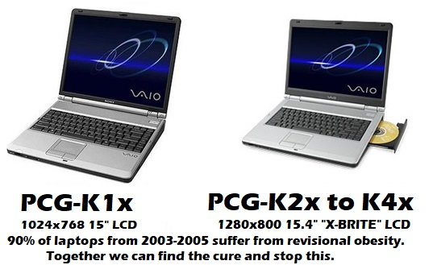

Sony VAIO PCG-Kxx Owner's Guide
An amazing screen but a not-so-amazing execution of hardware design.
Originally written February 15, 2022. Revised September 13, 2023.
Overview of the hardware
The Sony VAIO PCG-K series laptops (K1x, K2x, K3x, K4x, etc etc) are a series of entry-level (yes, they were literally advertised as such) 15-inch "Desktop Replacement" laptops with Intel Pentium 4 processors (some use the "Mobile" Pentium 4 chips, not to be confused with the older Pentium 4-M), ATI Radeon IGP 345M graphics (select models have a populated dGPU which is the ATI Mobility Radeon 9200, unfortunately those were only sold in Europe and Australia for whatever reason), 266MHz DDR SDRAM, and were bundled Windows XP Home Edition with Service Pack 1a or Service Pack 2. Hard Drive capacities ranged from 40GB to 80GB, and can be upgraded to larger drives, even those above 128GB. These weren't exactly popular as sony was known for lightweight "ultra-portable" laptops, but they were popular with those who wanted a new laptop to replace, say, their aging Dell Inspiron 7000 or Sony VAIO PCG-F to name a couple of older examples. The issue, however, was that Sony opted for the aging RS200M platform for these laptops which made them look rather pathetic in comparison to offerings from HP, IBM, Acer, and Dell to name a few. They were about as portable as their offerings but were inefficient and felt slow compared to a system like the Pavilion zv5000/zx5000 which had a more up-to-date chipset and supported hyperthreading. More on the issues with the K series later, but now you've got an idea of what these were like.
There are 4 different models of these laptops. The PCG-K1x series has a 4:3 15-inch display running at 1024x768 while the K2x-K4x laptops have a 16:10 15-inch "X-BRITE" display running at 1280x800 (X-BRITE was sony's display technology that made pictures look more vibrant and color-accurate compared to leading LCDs on other consumer laptops, so much so they made a screensaver about it). The PCG-K3x series added improved cooling for Prescott CPUs (which honestly was a bad idea considering the fact the RS200M poorly handles prescott), and the PCG-K4x was more of a refinement. Yes, there is not much variety, but there are definitely some notable internal differences especially comparing the K1-K2 to the K3-K4.

The oddities of being an "entry-level" desktop replacement
These laptops were part of the great Pentium 4 Mobile Computing fad of the early 2000s, and thus it was more of a one-off system even though it lasted well into 2005 with the K4x revision. During that time, manufacturers and engineers around would just throw stuff at the wall and used what stuck. These laptops were unfortunately hindered by the aforementioned ATi RS200M chipset, which is especially seen in the PCG-K3x and K4x models. The chipset only supported CPUs with a 533MHz front side bus, the integrated graphics were hot garbage (IGP 340M, more specifically the 345M which is identical), there was no hyper-threading support, and the maximum RAM was only 1GB. These may not sound so bad especially considering this is a laptop from 2004, but when you look at other options, it becomes clear. The Dell Inspiron 1100, while the iGPU on that was no better, had the Intel 845GL chipset paired with DDR SDRAM and could happily support up to 2GB of RAM.
The PCG-K series models were usually priced between $1,000 and $2,000 depending on the configuration. While I was unable to find all of the MSRPs, I can tell the PCG-K33 was originally priced at $1,350 according to an Amazon review from the time. Compared to something like the Pavilion zv5000, which started at $1,200 for the base model, this was not a great deal. The VAIO did have brand recognition on its sleeve, but unfortunately looking deeper into reviews for this machine, it becomes clear that there was a painful drop in quality. Some of that is attributed to the mentality of owning a desktop replacement as people were not exactly aware of the higher power usage of these machines and just treated them as if they were typical laptops with laptop CPUs... when they really weren't.
If you look at more systems from the early 2000s using the Pentium 4 CPU, you will probably see how the PCG-K line is essentially just a budget desktop with laptop components duct-taped to it. Cheap $300-500 desktops from Dell and HP were about the same as this laptop in terms of their performance. With the 3 and 4 models, things REALLY got unbelievably stupid when Sony used Mobile P4HT (yes, the HT versions) processors in these machines that didn't even support HT whatsoever! This combined with the poor design of the Prescott microarchitecture led to high power consumption and premature failure. Sony using a P4HT in a system that doesn't even support HT is like throwing in a V8 into a Honda Pilot albeit (somehow) with 2 cylinders inactive. It's inefficient and a terrible way to utilize something that's more capable than the limits that are imposed upon it. What's even more ridiculous is that Sony and Quanta took the time to re-design the motherboard for the newer K models but used the EXACT SAME chipset. I understand the budget was probably not that high for that machine (though I will say it's built rather well for a laptop from 2004), but honestly to me that is a waste of R&D that should have been put towards making a redesigned motherboard that supports newer technologies.
Known flaws and observations
Like with any Pentium 4 laptop from the early to mid 2000s, you WILL run into issues down the road. The PCG-K series laptops were somewhat more basic than competing offers as it had a (terribly outdated for 2004) Radeon IGP chip. However, pretty much all Pentium 4 laptops (and even desktops) will run into VRM failure if a poor design is implemented. This is seen commonly if you have a PCG-K3x or K4x laptop, but the CPUs that Sony LITERALLY USED BY DEFAULT in those machines are to blame for sure. Those processors suck up so much energy! I have also seen this on a PCG-K315Z motherboard I imported from the UK, which shut off under load. The fix? Use a Northwood CPU. Upon testing it with Windows Vista (yes, Vista, it was more than intensive enough to get the CPU at 100% on startup), it was perfectly stable. I call this symptom of random shutdowns "Prescott K-series Sudden Shutdown Syndrome" or for short, PKSSS. This is not caused by the battery/AC to DC board as I have observed along with other people who worked on these laptops, and is not caused with overheating if the problem persists after cleaning the fans out and changing the thermal paste (Prescotts have a soldered IHS so it definitely isn't the TIM used between the die and the IHS). I'm not exactly sure what the root cause of my so-called PKSSS is but it's likely the additional circuitry on newer K-series models that accomodates for the higher power requirements of the Prescott P4. Apparently, that still isn't enough so it's best to run a Northwood with this computer. This also happens after a while if you use a Prescott CPU on a K1x or K2x model (which I don't recommend because of the 75W TDP limit as per the schematics for MBX-114).
Also, prescott bad. Really bad. Intel really thought a 31 stage instruction pipeline could provide higher performance but in reality it was slower clock-for-clock than Northwood and absolutely needed HT to show any improvements on some setups. SSE3 doesn't really provide improvements on a K series laptop either because you're already so limited by the IGP and the chipset to a point where it's not worth using newer software on that system.
Looks can be deceiving: "Gray Tantalums" are not what you think
These being Sony VAIOs, are unsurprisingly a pain in the ASS to repair when something goes wrong. Some K3x machines will outright stop detecting HDDs (R0108X3 seems to fix that though). I've also seen people alluding to the symptoms that I have determined with my PKSSS observation, and while I mentioned I have not found a root cause, it's possible that capacitors on these laptops could be replaced. A handful of capacitors used on K series motherboards look like they are tantalums but do NOT be fooled; These aren't tantalum capacitors but a weird polymer/electrolytic surface mount capacitor type that uses the same kind of pos/neg leads as a tantalum to provide enough throughput to store energy that a normal aluminum SMD capacitor can't do, but likely need the characteristics of an electrolytic capacitor. Electrolytics are usually preferred for smoother power filtering and from my understanding you can't find that with typical yellow/solid tantalum capacitors. This is also a reason why some recapping jobs still rely on electrolytic or polymer capacitors, especially with my Console5 kits I bought for my old consoles that still use those. They are cheaper but also provide the best functionality by design if the application of that capacitor requires it to be electrolytic. Not all of the capacitors on that board are solid tantalum caps but that is for good reason considering the need for smoother filtering to my understanding. I might be wrong about how these capacitors work, but I've seen multiple cases of people not just mindlessly replacing electrolytic capacitors with solid-state tantalums. It may work on some boards (like old Macintosh boards) but you'd ideally want to replace the original capacitors with the same type unless it has been tried and true that other types can be used.
I'd also like to mention that the vcore 470uf capacitors usually don't fail as they are tantalums but if your machine does not power on it is likely that one of those capacitors would be causing a short (or one of the many MLCCs, and in that case if you don't know how to do microsoldering, you're fucked.) The PCG-K series produces a LOT of heat (especially on 3 and 4 systems with prescott CPUs) so it's likely that the system has caps that just ran dry. Ideally for no-power issues you should replace the motherboard but if you don't have any other option you could repair the board.
BIOS updates (also other information about CPUs)
I cannot stress but recommend you to install R0108X3 from my website. It works on all K-series models and provides fixes for BIOS-related glitches/bugs, especially the issue relating to some PCG-K3x models returning "Operating system not found". It will also allow you to install Prescott CPUs into PCG-K1x and PCG-K2x models, but I do not recommend doing this as the motherboards used in those laptops are designed for up to a 75W TDP, and prescott chips go over that limit enough to a point where it will cause stability and shutdown problems. Either way, you can still run Northwood CPUs with this BIOS and on some models it will help detect the Mobile Northwood CPUs. I am not quite sure if the PCG-K1 and K2 models have the DT/Mobile switch like the PCG-FRV, but it does use the same motherboard (MBX-114).
The PCG-FRV series is similar but this will NOT work. WinPhlash will automatically prevent you from flashing a K-series BIOS due to a motherboard/platform revision mismatch between FRV models and K models. MBX-114 is used in both models seemingly but I am sure the arrangement has changed; I noticed the FRV series in particular have PLCC socketed BIOS chips and K series boards seem to have them soldered directly to the board.
Maintenance level
Honestly, there isn't much to do from frequent maintenance of the cooling fans to dust them out, and to use high-quality thermal paste instead of the factory application. If you have upgraded your K-series with a Prescott CPU (requires R0108X3, works on all K models), you should maintain it more frequently if you use the machine more often. The fans get super loud when you upgrade your processor to a Prescott CPU (ex. Mobile Pentium 4 538) and that is an indicator they are working harder to exhaust the heat out while also pulling fresh air in. It's not a general recommendation to install a Prescott CPU in a PCG-K2x or earlier, as the motherboards weren't exactly designed for it; the K3x and later have a slightly different heatsink that accomodates for the extra heat output of the Prescott P4. I did have a Prescott in my K23 but I switched it back to a northwood to prevent any further issues. I also have a PCG-K33 but the PCMCIA door is missing, so I noticed the fans also managed to pull air in from the normally closed PCMCIA plastic door that wasn't there on mine. Perhaps if you wanted to slightly improve airflow, you could remove the small door on your PCMCIA slot.
Processor upgrades
I would recommend the Mobile Pentium 4 3.06 or the Pentium 4 2.8/533 and both of which should be on the Northwood core; this is easily seen if your CPU has 512KB of L2 cache. Installing a prescott CPU can be done but it will cause problems, and it is not worth using on the poorly aged platform this laptop uses. The K series already come with fast CPUs for their time, but the K3 and K4 laptops should have Northwood CPUs installed to reduce the risk of the sudden shutdown issue I talked about earlier.
You can delid most Northwood P4s that fit my criteria. However, if you know you've cut the glue under the IHS all the way and don't feel it easily coming off... STOP! You have a soldered IHS and you should continue with installing the CPU with fresh thermal paste (I recommend Arctic MX4; the K series laptops dry out paste so much to a point where it will be a bitch to remove, and MX4 thankfully prevents that from happening unlike with generic silicone based thermal paste ESPECIALLY that cheap stuff on eBay). Why should you delid? It will significantly improve temps on chips that don't use soldered IHSes, so basically 95% of P4s under a rated 70W TDP if I'm correct.
Storage, RAM, and Charger/Battery options
For a storage drive, I would recommend an mSATA to 44-pin IDE adapter with a reputable mSATA SSD of any capacity. You could rely on ye olde spinnin' rust but those IDE laptop drives are SLOW.
The max RAM for all K-series laptops is 1GB and it should be the PC2100 standard. You can use faster RAM but it would still run at 266MHz (literally PC133 but with double data rate technology) due to the RS200M's RAM speed limitation. Some RAM is used for video memory because of the ATI Radeon IGP, which can be adjusted from 8MB to 128MB; personally a good middle ground is 64MB but 32MB is also ideal considering the card in that machine is essentially equivalent to a Radeon 7000. Your K-series laptop should come with at least 512MB of RAM, unless a previous owner removed it for whatever reason.
Find a 150W 19.5V Sony charger. The batteries these laptops use have the P/N PCGA-BP2NY. However, you might want to steer clear of OEM batteries; Sony cells were recalled in 2006.
Operating system
Windows 2000 and XP are good options, though 2000 does have issues with suspend in my experience where the system won't wake up for whatever reason. I'm not sure if a fix for this exists but I have also seen it on another RS200M-based laptop. Windows 9x may also work but I have not tested it, though it would be an interesting use case for such a machine. I would personally see the PCG-K1x being a nice Windows 98SE (also ME if you know what you're doing..) machine. They use a 4:3 screen and can go up to 1024x768 as needed. I believe I did try it on a K23 but I could only get it up to 1280x768 and not 1280x800 for whatever reason.
There used to be a good amount of support for old R100/R200 cards (including the RS200M which is very close to an ATi Radeon 7000) on a GNU+Linux distribution, but unfortunately pretty much all modern kernels do not provide adequate support to run such an ancient framebuffer.
As far as I'm aware, hackintosh distros or vanilla setups outright won't work.
Conclusion
The Sony VAIO PCG-K series laptops have to be the more "to-the-point" Pentium 4 laptops of the era, but they weren't of much interest either. With okay processors and paltry graphics options (except if you lived in Europe or Australia, because you could have a Radeon 9200 version of this...), it did not attract most buyers. But for those who for some reason wanted a Pentium 4 laptop that was somewhat reliable, they usually opted for the VAIO. It's an interesting laptop in the sense that it was like an example of a more low-end Pentium 4 powered laptop. As we all know, these "Desktop Replacement" Pentium 4 Laptop systems that were made throughout the early-mid 2000s by various manufacturers ended in sheer disaster. Overheating, impracticality, bulkiness, and pretty much little to no market adoption. Apple could have done a PowerBook G5 with a much thicker body, but was it going to be something that most people would buy? Absolutely not. The Sony VAIO PCG-K series laptops have their place as some of the least interesting Pentium 4-based laptops of the time, aside from the X-BRITE screens which you can always just throw into another machine; I had one from a dead PCG-K37 and used it in a Toshiba Satellite P15. As with most companies that made Pentium 4 laptops, they just gave up and moved on to the Pentium M and Intel Core series chips, and the mobile Core 2s absolutely wiped the floor with the full desktop Pentium 4 chips. I worked with some of the VGN-FS/FE Pentium M/Core Duo models and they are miles faster than a PCG-K while consuming a fraction of the power and weighing about half of the PCG-K.